Rust 的错误信息输出原理概述
1. 背景
最近在参与 KusionStack 内置的领域语言 —— KCL 配置语言编译器 的开发，需要开发编译器的错误处理模块，由于 KCL 使用 Rust 开发的，因此打算来学学 Rust 语言的错误处理模块是怎么做的。
2. 介绍
单纯从 Rustc 源码的目录结构中看，Rustc 中关于错误处理的部分主要集中在 rustc_errors 、rustc_error_codes 和 rustc_error_message 三个目录下，但是在看源码的过程中我发现由于 Rustc 代码量大，并且错误处理模块涉及到很多其他的模块，单纯的看这三个目录下的代码很容易看晕，剖析起来也比较困难。因此，我打算将这部分的的源码剖析拆分成几个部分，这篇文章主要结合 Rustc 的官方文档和 Rustc 源码进行结构的梳理。
因此本文的核心思路只是对错误处理部分的结构进行梳理，目标就是梳理一下在 Rustc 对 Rust 程序进行解析的过程中，错误是如何从分析过程一步一步传递到终端输出成诊断信息的。对于一些复杂且与错误诊断信息输出无关的内容，我们先暂且略过不做深究。留个坑后面再填，先把结构梳理清楚，也有助于我们后续一步一步的对源码进行更加深入清晰的剖析，防止我们在 Rustc 大量的源码中迷路。并且为了能更加清晰的看代码的结构，本文对使用的代码片段做了处理，去掉了生命周期等与代码执行逻辑无关的部分。
3. 诊断信息长啥样？
首先，看源码之前，先看看 Rust 的诊断信息的格式。如下图所示：
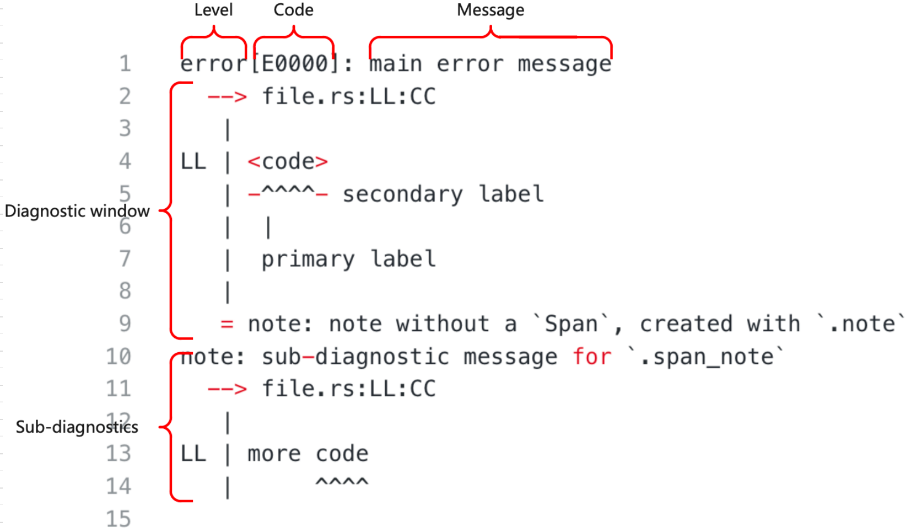
根据 Rustc 文档中的描述，上述信息可以分为下面5个部分，
-
Level 等级 (错误，警告等等)，这部分主要用来说明当前消息的严重程度。
-
Code 代码或者翻译成编号更好一些 (例如：对于“错误的类型”这种诊断信息，它对应的编号是E0308)，这个编号是一个索引，用户可以通过这个索引找到当前错误更加完整的描述信息。通过 lint 创建的诊断信息没有这个编号。
注：我后面又查了一下，rustc 官方把 Code 称作 Rust Compiler Error Index。 -
Message 消息，描述当前发生的问题的主要内容，这个消息的内容应该是通用的独立的，即使没有其他内容只看这一条信息的话，也能有所帮助。
-
Diagnostic Window 诊断窗口，主要负责展示出现问题的代码上下文相关的信息。
-
Sub-diagnostic 子诊断信息，任何错误都有很多的子诊断信息并且他们看起来都和诊断信息的主部分相似。
4. 诊断信息从哪来？
在了解了 Rustc 诊断信息之后，我们看下 Rustc 是如何构造这样的诊断信息的。在这部分 Rustc 官方提供了两种方式，
- 实现 rustc_sessions 提供的 trait。
- 用 rustc_macros 中为输出诊断信息准备的属性宏，自动实现 rustc_sessions 提供的 trait。
直接看上面这两点不太好理解，主要的流程可以参考下面这张图，
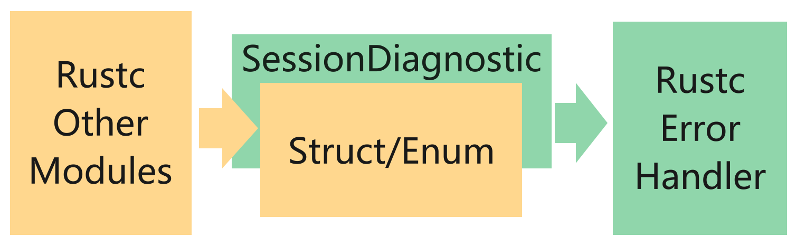
其中，黄色部分表示在 Rustc 的不同模块中，定义各自的错误/警告等异常类型的结构体 Struct (注：枚举也可以，本文是一个概述，为了方便描述所以下面就只列Struct了)。绿色部分表示在Rustc的错误处理模块提供了一个 trait SessionDiagnostic。不同模块内部定义的 Struct 实现这个 trait SessionDiagnostic。trait SessionDiagnostic 的具体实现就是将 Struct 中输出诊断信息需要的内容抽取出来封装好，返回给 Rustc 的错误处理模块用来输出。
这就是上面提到的实现错误模块提供的 trait。这个 trait SessionDiagnostic 的源码如下：
#![allow(unused)] fn main() { // rustc/compiler/rustc_session/src/session.rs pub trait SessionDiagnostic <T: EmissionGuarantee = ErrorGuaranteed> { fn into_diagnostic( self, sess: & ParseSess ) -> DiagnosticBuilder<T>; } }
以 Rustc 文档中给出的错误结构为例：
#![allow(unused)] fn main() { pub struct FieldAlreadyDeclared { pub field_name: Ident, pub span: Span, pub prev_span: Span, } }
按照 Rustc 的官方描述，要想输出 struct FieldAlreadyDeclared 对应的错误信息，就要实现 trait SessionDiagnostic。Rustc 的源码内部定义的错误结构目前完全采用第二种方式。
在 Rustc 提供的官方文档上，提供了 trait SessionDiagnostic 的具体实现。
#![allow(unused)] fn main() { impl SessionDiagnostic for FieldAlreadyDeclared { fn into_diagnostic(self, sess: Session) -> DiagnosticBuilder { let mut diag = sess.struct_err(...); diag.set_span(self.span); diag.span_label(...); ... diag } } }
上面代码展示了如何为 Struct FieldAlreadyDeclared 实现 trait SessionDiagnostic，具体的代码细节看不懂也不用急，这里只做一个展示，代码的细节不是我们本文的主题，过早的深入代码细节容易迷路，只要知道这部分代码从 Struct FieldAlreadyDeclared 抽取出了输出诊断信息需要的内容，并封装到了 DiagnosticBuilder 中返回。
那么怎么理解第二种方式呢？以上面的代码为例，实现 trait SessionDiagnostic 主要是将 Struct FieldAlreadyDeclared 中需要输出到诊断信息中的内容，抽取出来，填充到 DiagnosticBuilder 中，这个过程其实就是在搬砖，将组成诊断信息的砖块从 Struct FieldAlreadyDeclared 搬运到 DiagnosticBuilder 中，因此，这个过程可以自动化，当我们定义一个新的错误 Struct 的时候，砖块不需要我们自己搬，我们可以写一个程序帮我们搬，我们只需要在定义 Struct 的时候标注出来哪些砖需要搬就可以了。
所以，Rustc 内部通过属性宏的方式写好了搬砖的程序，这个搬砖程序为我们提供了一些注解，在定义新的错误 Struct 时，只需要通过注解标注出哪些砖要搬，Rustc 内部的属性宏就会为我们自动实现 trait SessionDiagnostic。同样是 Struct FieldAlreadyDeclared，使用第二种方式的代码如下：
#![allow(unused)] fn main() { #[derive(SessionDiagnostic)] #[diag(typeck::field_already_declared, code = "E0124")] pub struct FieldAlreadyDeclared { pub field_name: Ident, #[primary_span] #[label] pub span: Span, #[label(typeck::previous_decl_label)] pub prev_span: Span, } }
其中，通过注解 #[derive(SessionDiagnostic)] 使用 rustc_sessions 内部实现的属性宏，通过注解[diag(typeck::field_already_declared, code = "E0124")] 说明当前诊断信息输出的文本信息与前面提到的当前诊断信息的编号，最后通过注解 #[primary_span], #[label] 和 #[label(typeck::previous_decl_label)] 注解标注了出现问题的代码上下文相关的信息。
定义了带有注解的 Struct 或者为 Struct 实现了 trait SessionDiagnostic 后，接下来要做什么？Rustc 文档是这么说的。
Now that we've defined our diagnostic, how do we use it? It's quite straightforward, just create an instance of the struct and pass it to emit_err (or emit_warning).
现在，我们已经定义了我们的诊断信息，那我们如何使用它呢？这非常简单，我们只需要创建一个结构体的实例，并将它传递给 emit_err() 或者 emit_warning() 方法就可以了。
#![allow(unused)] fn main() { tcx.sess.emit_err(FieldAlreadyDeclared { field_name: f.ident, span: f.span, prev_span, }); }
不太明白，但是得到了一个关键方法 emit_err() ，通过这个方法将错误的诊断信息输出到终端，那就在源码里全局搜索一下这个方法：
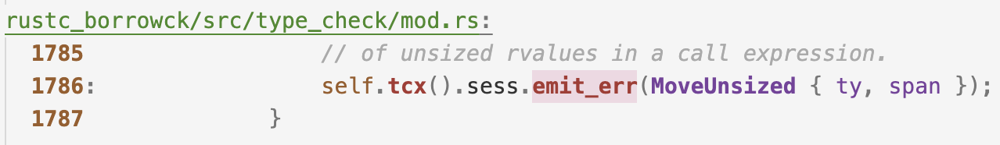
找到了这个方法的定义如下：
#![allow(unused)] fn main() { // 这个方法在 Struct Session 中。 impl Session{ pub fn emit_err( &self, err: impl SessionDiagnostic ) -> ErrorGuaranteed { self.parse_sess.emit_err(err) } } }
我们顺着方法的调用链路连续点进去看看，
#![allow(unused)] fn main() { // self.parse_sess.emit_err(err) impl ParseSess{ pub fn emit_err( &self, err: impl SessionDiagnostic ) -> ErrorGuaranteed { self.create_err(err).emit() } } // self.create_err(err) impl ParseSess{ pub fn create_err( &'a self, err: impl SessionDiagnostic, ) -> DiagnosticBuilder<ErrorGuaranteed> { err.into_diagnostic(self) } } // self.create_err(err).emit() impl DiagnosticBuilder { pub fn emit(&mut self) -> G { ...... } } }
看代码好像明白了，把上面错误处理过程的图细化一下：

如图所示，我在图的右面增加了一些东西，黄色的部分没有太大的变化，Rustc 其他的模块定义错误的 Struct，绿色的部分增加了一些内容，细化了 trait SessionDiagnostic 的主要实现，根据黄色的 Struct 提供的内容生成蓝色的 DiagnosticBuilder。生成的 DiagnosticBuilder 中，内置 emit() 方法用来将诊断信息输出到终端，这个 emit() 方法最后会在 Session 中被调用。
在 rustc 中通过 Struct Session 调用生成的 DiagnosticBuilder 来输出诊断信息，具体的调用过程如上图右侧所示，Struct Session 内置了 Struct ParseSess ,这里包了两层 emit_err() 方法，并且在方法 ParseSess.emit_err() 中，调用了 ParseSess.create_err() 方法，这个方法接受 trait SessionDiagnostic 的实现，并调用 trait SessionDiagnostic 提供的 into_diagnostic() 方法获取 DiagnosticBuilder 实例，随后调用 DiagnosticBuilder 内置的 emit() 方法将诊断信息输出到终端。
看到这里，问题又来了，Rustc 通过 Session 接收 DiagnosticBuilder 输出诊断信息，这个 Session 是什么？这个 Session 是如何与 Rustc 其他模块联动的呢？或者说这个 Session 是怎么被调用的呢？
关于 Session 是什么，这不是本文的重点，为了防止迷路，这里先刨个坑，后续的文章中看看 Session 是什么，接下来，我们先来看看 Session 是怎么被调用来处理错误的。我们在全局搜索一下 sess.emit_err() 这个关键字，看看 rustc 是如何通过 Session 输出诊断信息的。
可以看到，在Rustc中很多地方都通过 Session 输出错误信息。
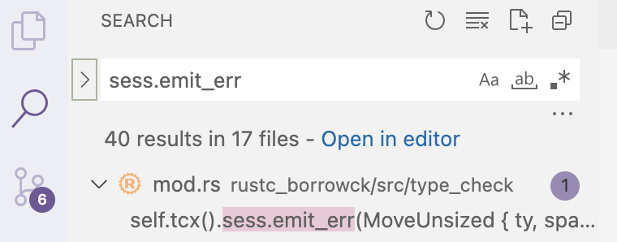
我看了一下，挑了几个其中比较典型，见名知意的地方。首先是在 Ructc 的语法解析器 rustc_parse 中，在进行语法分析的过程中遇到错误，会通过 sess.emit_err() 方法输出错误的诊断信息。
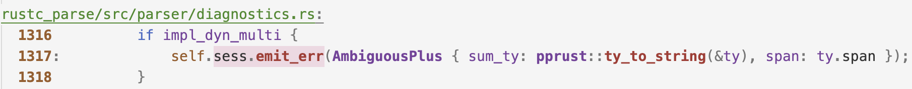
然后，在 rustc 的类型检查器 TypeChecker 中，所有权借用检查 rustc_borrowck 部分和类型检查部分 rustc_typeck 在检查到错误时会通过 sess.emit_err() 方法输出错误的诊断信息。与 rustc_parse 不同的是 TypeChecker 并不直接将 Session 实例作为结构体成员而是通过一个获取上下文的方法 tcx() 获取 Session 实例。
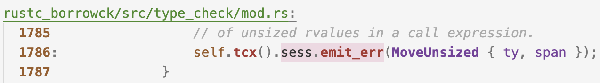 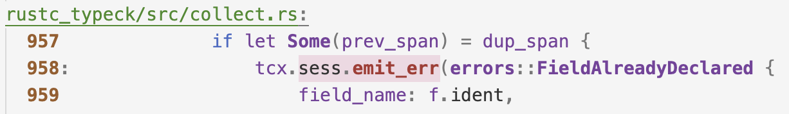
这个上下文方法 tcx() 的细节以及上下文的结构也是暂不深究，目前我们只需要知道 TypeChecker 也是通过 Session 输出诊断信息的就够了。然后，我们来浅看一下他们是如何借助 Session 输出错误的信息的。
首先，看看 rustc_parse 中关于 Session 的部分：
#![allow(unused)] fn main() { pub struct Parser { pub sess: & ParseSess, ...... } // 在 Parser 解析 Rust 语言的时候,会调用emit_err方法输出诊断信息。 self.sess.emit_err(...) }
见名知意给我带来了一点误判， Parser 内置的是 ParseSess 而不是 Session。所以，可以借助上面那个图的结构，给 Parser 错误处理的局部也单独画一张图。
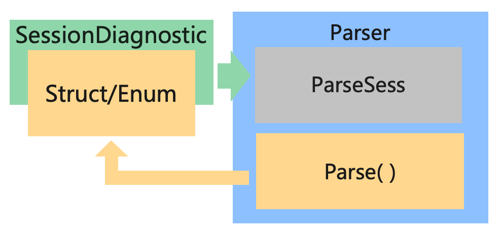
之前的图中已经展示了内部的细节，这里就不展示了，这里只展示 trait SessionDiagnostic 和 Parser 之间的关系，(注：上图中的 Parse() 方法是我起的名字，指的是 Rustc中 对 Rust 程序语法分析的过程，在 Rustc 源程序中这个方法并不一定存在，具体用的是什么方法不是本文的重点，但是只要是编译器就一定有 parse 过程，在不同的编译器中 parse 过程的名字可能不同。)
如图所示，在对 Rust 程序进行语法分析的过程中，如果出现错误，就实例化一个实现了 trait SessionDiagnostic 的错误 Struct 结构，并把它抛给 Parser 内置的 ParseSess 中的 emit_err() 方法将诊断信息输出。
然后，再看看 rustc_borrowck 和 rustc_typeck，从调用方式来看，他们不是直接内置 Session 的，他们应该是内置了一个上下文相关的结构，然后那个上下文相关的结构中包含 Session 。
#![allow(unused)] fn main() { self.tcx().sess.emit_err(MoveUnsized { ty, span }); }
点进 self 看一下，可以看到这是一个类型检查器 TypeChecker ，找到上下文结构并点进去深度优先的搜索 Session 或者 ParseSess 结构，为了防止大家看的时候迷路，搜索过程就不写了，这里直接展示搜索结果。
#![allow(unused)] fn main() { struct TypeChecker { infcx: & InferCtxt, ...... } pub struct InferCtxt { pub tcx: TyCtxt, ...... } pub struct TyCtxt { gcx: & GlobalCtxt, } pub struct GlobalCtxt { pub sess: & Session, // Session 在这里 .... } }
藏的够深的，不过好在我们还是把它挖了出来，目前聚焦于错误处理，所以暂时不用关心这些上下文结构 (XXXCtxt) 都是什么意思。
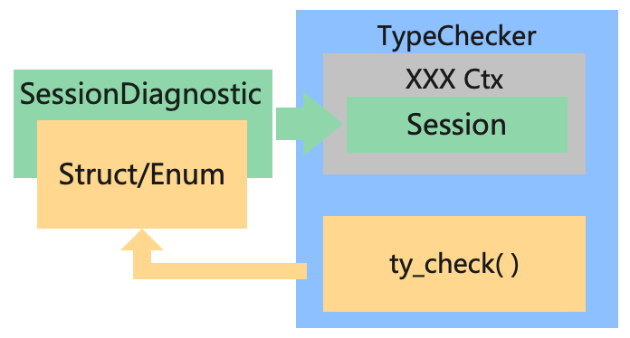
如上图所示，与 Parser 的部分同理，ty_check() 是我自己写的方法，代指 TypeChecker 对 Rust 程序进行类型检查的过程，目前聚焦于错误处理，所以 InferCtxt，TyCtxt 和 GlobalCtxt 等上下文结构我就缩写为 XXXCtx 了，可以看到，这个过程和 Parser 错误处理的过程是一样的，在类型检查的过程中出现错误，就实例化一个实现了 trait SessionDiagnostic 的结构，并把它抛给 TypeChecker 内置的各种上下文中内置的 Session 中的 emit_err() 方法将诊断信息输出。
看到这里，压力来到了 Session 和 ParseSess 这边，既然大家都把错误抛给他，那就来看看它里面干了啥。
#![allow(unused)] fn main() { pub struct Session { pub parse_sess: ParseSess, ...... } pub struct ParseSess { pub span_diagnostic: Handler, ...... } }
看不太明白，再把之前的代码拿来看看
#![allow(unused)] fn main() { // self.parse_sess.emit_err(err) impl ParseSess{ pub fn emit_err( & self, err: impl SessionDiagnostic ) -> ErrorGuaranteed { self.create_err(err).emit() } } // 这个方法是 self.create_err(err) impl ParseSess{ pub fn create_err( & self, err: impl SessionDiagnostic, ) -> DiagnosticBuilder<ErrorGuaranteed> { err.into_diagnostic(self) } } // 这个方法是 self.create_err(err).emit() impl DiagnosticBuilder { pub fn emit(&mut self) -> G { ...... /// 看来，是时候把这里省略的代码展开了... } } }
展开上述第21行的代码，看到这是一个 trait 的抽象接口：
#![allow(unused)] fn main() { impl<G: EmissionGuarantee> DiagnosticBuilder<G> { pub fn emit(&mut self) -> G { // 省略的代码 G::diagnostic_builder_emit_producing_guarantee(self) } // 省略的代码是一个trait的抽象接口。 pub trait EmissionGuarantee: Sized { fn diagnostic_builder_emit_producing_guarantee( db: &mut DiagnosticBuilder ) -> Self; ... } }
为了防止迷路，先不深究 EmissionGuarantee 是做什么的，只关注他提供的输出诊断信息到终端的功能就好了。 然后，我们在全局搜索 EmissionGuarantee，找一个 EmissionGuarantee 的实现，看看他是如何输出信息的。
#![allow(unused)] fn main() { impl EmissionGuarantee for ErrorGuaranteed { fn diagnostic_builder_emit_producing_guarantee( db: &mut DiagnosticBuilder<Self> ) -> Self { match db.inner.state { DiagnosticBuilderState::Emittable(handler) => { ... let guar = handler.emit_diagnostic(&mut db.inner.diagnostic); ... } DiagnosticBuilderState::AlreadyEmittedOrDuringCancellation => { ...... } } } } }
看到上面的代码，我觉得压力来到了 DiagnosticBuilder 这边，来都来了，得看看。
#![allow(unused)] fn main() { // match db.inner.state pub struct DiagnosticBuilder<G: EmissionGuarantee> { inner: DiagnosticBuilderInner, ... } struct DiagnosticBuilderInner { state: DiagnosticBuilderState, diagnostic: Box<Diagnostic>, } // match db.inner.state enum DiagnosticBuilderState { Emittable(& Handler), AlreadyEmittedOrDuringCancellation, } }
可以看到，最后是通过 DiagnosticBuilderState 中的 Handler 输出得诊断信息。
#![allow(unused)] fn main() { /// A handler deals with errors and other compiler output. /// Certain errors (fatal, bug, unimpl) may cause immediate exit, /// others log errors for later reporting. pub struct Handler { flags: HandlerFlags, inner: Lock<HandlerInner>, } }
到 Handler 这里，看看注释，我觉得可以了，我们知道了所有错误的诊断信息，最后都通过 Handler 输出到终端，到这里，可以再把上面的图细化一下：
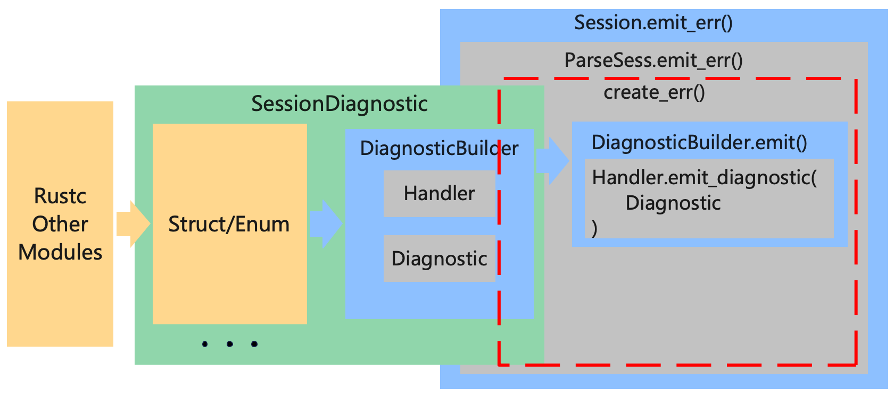
如图所示，我们在图中将 DiagnosticBuilder 内部的一点点细节画进去了，先不考虑 EmissionGuarantee。 DiagnosticBuilder 中包含输出诊断信息的 Handler 和保存诊断信息内容的 Diagnostic ，在 Session 和 ParseSess 中，会先调用 SessionDiagnostic 的 into_diagnostic() 方法，获得 DiagnosticBuilder，然后调用 DiagnoaticBuilder 的 emit() 方法输出诊断信息，在 emit() 方法中，会调用 DiagnoaticBuilder 内置的 Handler 并将 DiagnoaticBuilder 中的 Diagnostic 输出到终端。
总结
在本文中我们只涉猎了 Rustc 中错误处理模块很小的一部分，通过这一部分的浅看，我们大概的了解了一下 Rustc 中错误从出现到变成诊断信息输出到终端的整个流程。最后以上文中提到的 rustc_parser 和 rustc_type_checker 为例，一张图收尾。
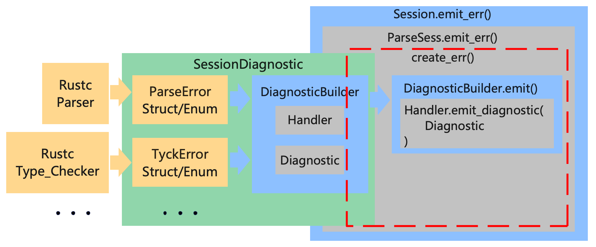
Rustc 错误处理模块的三部分:
- 编译器的各个部分自定义错误的结构，保存错误信息。
- SessionDiagnostic 负责将各部分自定义错误的结构转换为 DiagnosticBuilder。
- Session/ParseSess 负责调用 SessionDiagnostic 提供的接口获得 DiagnosticBuilder ，并调用 DiagnosticBuilder 内置的方法输出诊断信息。
如果还是有一点绕晕了，在上面这个图上再加一笔，通过红色的尖头我们可以看到 Rust 中的一个异常包含的信息的从发生错误的地方到开发者面前的主要流向：
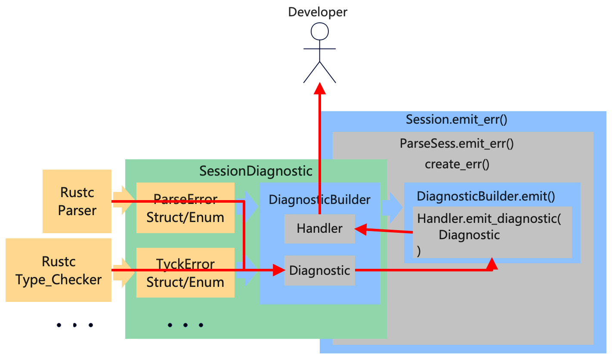
从上图右面的部分可以看到，错误信息并不是直接从 DiagnosticBuilder 中发送到开发者面前的，而是先从 Session 兜了个圈子，那为什么要这么做呢？这里先刨个坑，后续我们将进一步深入到 Rustc 的源码当中去，详细剖析解读一下各部分的源码结构并且理解一下 Rustc 的开发者增加各个部分的动机。
本期挖坑
- Session 和 ParseSess 到底是什么 ？
- 为什么搜索 emit_err() 没有涉及到词法分析 Lexer 和代码生成 CodeGen 的部分，这两个部分的错误是怎么处理的 ？
- EmissionGuarantee 这个结构在错误处理的过程中是做什么的 ？
参考
- KusionStack: https://github.com/KusionStack/kusion
- KCL 配置语言编译器: https://github.com/KusionStack/KCLVM
- Rustc 官方文档: https://rustc-dev-guide.rust-lang.org/
- Rustc 源码: https://github.com/rust-lang/rust
- Rust Compiler Error Index: https://doc.rust-lang.org/error-index.html